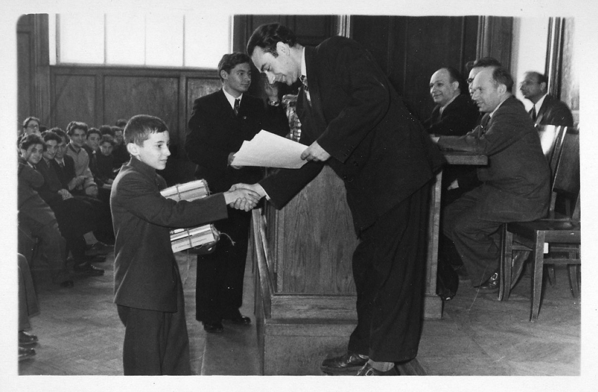
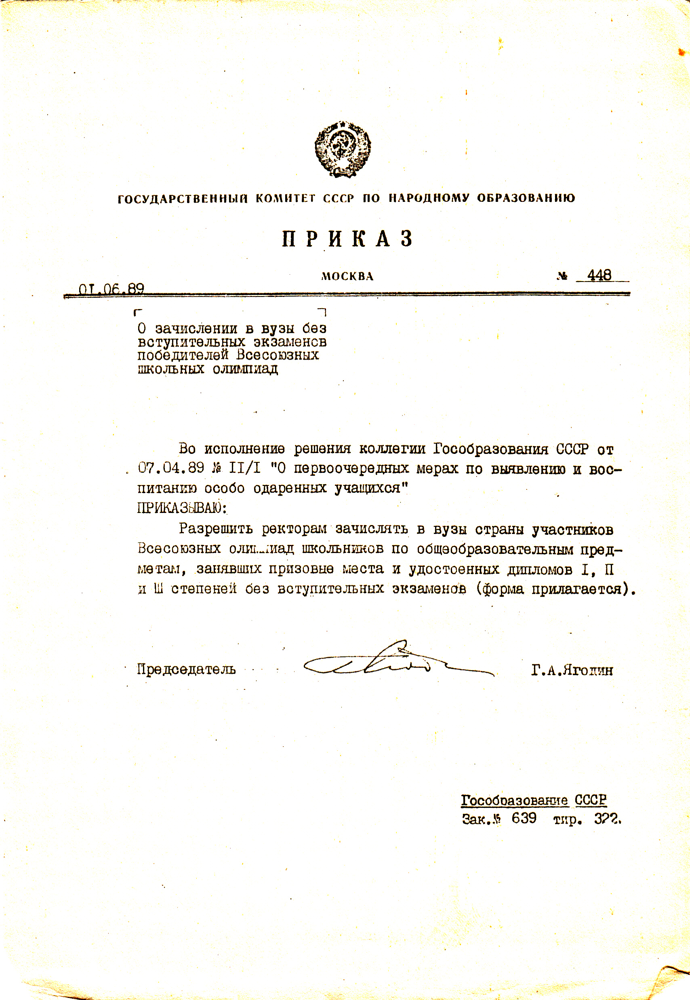
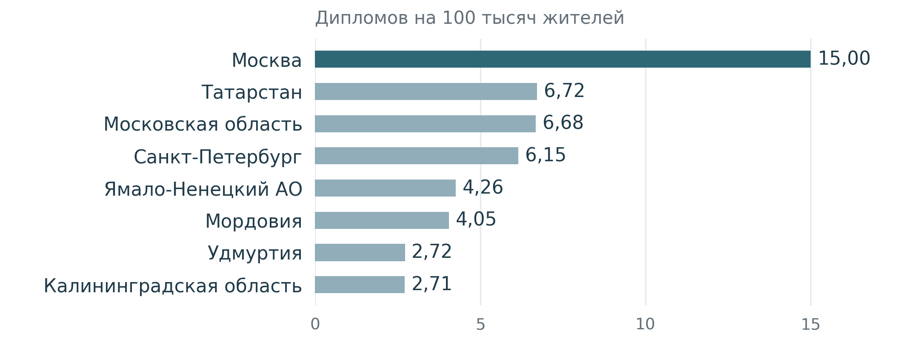
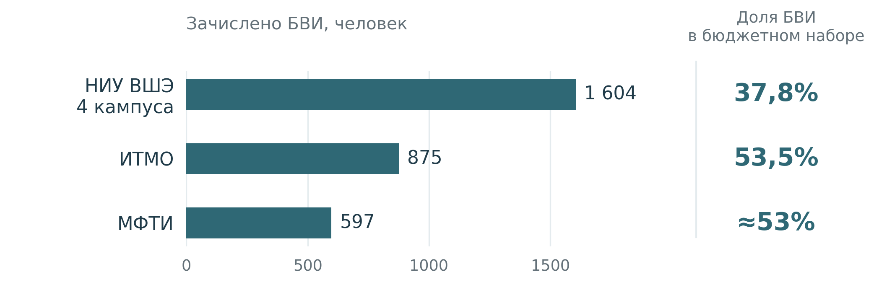

Олимпиадное движение в России
1. История
От кружков математиков до национальной системы
Сегодня школьные олимпиады — заметная часть российского образования. Всероссийская олимпиада проводится по десяткам предметов, университеты организуют собственные соревнования, а диплом может дать серьёзные льготы при поступлении. Но эта система возникла не сразу. За неполные сто лет олимпиада прошла путь от университетского эксперимента до массового образовательного института [1].
Олимпиада до олимпиадной системы
Первые устойчивые математические олимпиады в СССР появились в 1930-е годы: в 1934 году соревнование прошло в Ленинграде, а год спустя — в Москве. Московскую олимпиаду организовали при активном участии математического сообщества МГУ; о первых соревнованиях подробно писал секретарь оргкомитета Ростислав Бончковский [2].
Изначально олимпиады существовали внутри университетской и кружковой культуры. Они позволяли преподавателям находить школьников, которым было тесно в рамках обычной программы, а самим участникам — знакомиться с математикой, требующей не столько знания формул, сколько самостоятельной идеи [3].
Постепенно формат распространился на другие дисциплины. До войны появились соревнования по химии, развивались физические олимпиады, а в 1950 году биолого-почвенный факультет МГУ начал проводить Московскую биологическую олимпиаду [1]. Были и локальные гуманитарные эксперименты: например, в 1951 году филологический факультет МГУ провёл олимпиаду по русскому языку и литературе для старшеклассников [4].

1960–1980-е: государственная система
В начале 1960-х масштаб движения резко вырос. Преподаватели, аспиранты и студенты ведущих вузов стали ездить по стране и проводить так называемые «большие» олимпиады по математике и физике. Среди центров этого движения были МГУ, МФТИ и Сибирское отделение Академии наук [5].
В 1961 году прошла первая Всероссийская математическая олимпиада, в 1964 году был создан Центральный оргкомитет Всероссийской физико-математической олимпиады во главе с Петром Капицей, а в 1967 году оформилась система Всесоюзных олимпиад по математике, физике и химии [1][5].
Олимпиада стала частью более широкой инфраструктуры работы с сильными школьниками: кружков, заочных и летних школ, специализированных классов. В 1963 году при МГУ открылась физико-математическая школа-интернат № 18, позднее ставшая СУНЦ МГУ [6]. Так олимпиада превращалась из отдельного соревнования в один из механизмов поиска и подготовки будущих студентов, учёных и инженеров.
При этом советская система оставалась прежде всего естественно-научной. Её ядром были математика, физика и химия; биология институционализировалась позднее, а первая Всесоюзная олимпиада по информатике прошла только в 1988 году [1]. Единой всесоюзной вертикали по истории, литературе, обществознанию, экономике или праву не существовало.
Ярким исключением стала лингвистика. В 1965 году на Отделении структурной и прикладной лингвистики МГУ прошла первая Олимпиада по языковедению и математике, связанная с именами Андрея Зализняка, Владимира Успенского и Альфреда Журинского [7]. Особенность состояла в том, что школьного предмета «лингвистика» не существовало: участникам предлагали материал незнакомого языка и просили самостоятельно восстановить закономерности. Олимпиада знакомила школьников с новой научной областью, а позднее эта традиция стала одним из источников международного лингвистического движения [8].
Олимпиады и поступление в вузы
Олимпиады довольно рано стали влиять не только на образовательную траекторию школьника, но и непосредственно на поступление. Уже в 1960-е отдельные университетские центры использовали олимпиадный отбор как собственный механизм приёма. Например, в Новосибирском Академгородке победители-десятиклассники заключительного тура олимпиады, проходившего в форме Летней школы, получали право поступать в НГУ без вступительных экзаменов; более младших участников приглашали в физико-математическую школу-интернат [9].
Постепенно льготы стали распространяться и на победителей крупных Всесоюзных олимпиад. Одним из сторонников такого подхода был физик Исаак Кикоин, многолетний организатор Всесоюзной физической олимпиады: в материалах РАН и МИФИ отмечается, что при его участии победители получили право поступать в вузы без вступительных экзаменов [10].
К концу 1980-х эта практика была уже закреплена нормативно. В 1989 году Государственный комитет СССР по народному образованию выпустил специальный приказ № 448 «О зачислении без вступительных экзаменов победителей Всесоюзных школьных олимпиад» [11].

Одновременно формировался и другой механизм — собственные олимпиады и конкурсы вузов. Типовые правила приёма 1991 года прямо разрешали приёмным комиссиям приравнивать к вступительным экзаменам результаты олимпиад и предметных конкурсов, если в их проведении участвовали экзаменационные комиссии данного вуза [12].
Таким образом, уже к концу СССР сложились две модели, напоминающие современную систему: сильнейшие участники государственной олимпиадной вертикали могли получать особые права при поступлении, а университеты могли использовать результаты собственных соревнований вместо вступительных испытаний. Единого Перечня олимпиад, общих уровней и универсальных правил признания результатов, однако, ещё не существовало.
После СССР: новые предметы
После распада СССР олимпиадная система сохранилась, но стала значительно шире. В 1990-е и начале 2000-х государственная Всероссийская олимпиада быстро распространилась на гуманитарные, социальные и прикладные дисциплины.
Олимпиада по литературе проводится с 1995 года, по русскому языку и экономике — с 1996-го, по английскому языку — с 1998-го [13][14][15][16]. На рубеже веков появляются история, обществознание, технология, физическая культура и другие направления [1].
Это изменило и само понимание олимпиады. Если в математике привычен набор задач, то другим дисциплинам пришлось создавать собственные форматы: анализ художественного текста в литературе, аудирование и устная речь в иностранных языках, практические и проектные задания в технологии. Олимпиада превратилась из преимущественно естественно-научного соревнования в универсальную образовательную форму.
Вузовские олимпиады и поступление
Одновременно в 1990-е и 2000-е быстро росло число собственных университетских соревнований. ВШЭ впервые провела олимпиаду школьников в 1998 году — от этой даты отсчитывается история современной «Высшей пробы» [17]. В МГУ развивался «Ломоносов»: например, первая олимпиада по истории прошла в 2005 году [18].
Для университетов олимпиады становились не только просветительским проектом, но и инструментом поиска сильных абитуриентов. Однако соревнований становилось всё больше, а их статус и правила признания различались.
В 2007 году был утверждён новый Порядок проведения олимпиад школьников, а в 2008 году появился официальный Перечень на 2008/09 учебный год. Олимпиадам стали присваивать уровни и связывать их результаты с формализованными льготами при поступлении [19].
Государство при этом не создало вузовские олимпиады с нуля, а упорядочило уже существовавшую практику. Так окончательно оформились две основные ветви современной системы: государственная многоступенчатая ВсОШ и перечневые олимпиады, организуемые университетами и другими организациями.
Олимпиада становится моложе
Изначально крупные олимпиады были ориентированы прежде всего на старшеклассников, но к концу XX века олимпиадная культура начала двигаться в младшие классы.
В 1990 году в Москве появился «Математический праздник» для 6–7 классов — уже не просто соревнование, а большое математическое событие с лекциями, играми и разбором задач [20]. В 1993 году начался Турнир Архимеда для 5–6 классов [21]. Позднее собственные олимпиады для младших школьников стали проводить школы, районы и города.
Федеральная ВсОШ пришла в начальную школу заметно позже. Изменения 2015 года включили учеников 4 класса в школьный этап по отдельным предметам [22]. Таким образом, государственная система скорее закрепила практику ранних олимпиад, которая к этому моменту уже существовала вне неё.
Международное измерение
СССР довольно рано включился и в международное олимпиадное движение. Первая Международная математическая олимпиада прошла в Румынии в 1959 году, и советская команда участвовала в ней с самого начала [23]. Позднее появились международные олимпиады по физике, химии, информатике, биологии и другим дисциплинам.
Международные соревнования не только демонстрировали результаты национальной системы, но иногда влияли на неё обратно — например, требования к подготовке сборных меняли форматы отбора и национальных олимпиад.
Интересен пример лингвистики: традиция, начавшаяся в МГУ в 1965 году, вышла на международный уровень, и в 2003 году в Болгарии состоялась первая Международная олимпиада по лингвистике. Уже в следующем году её принимала Москва [24]. На сегодняшний день Российские школьники успешно выступают на международных соревнованиях благодаря выстроенной внутри системе отбора и подготовки.
От поиска талантов к образовательной системе
За несколько десятилетий функции олимпиад заметно изменились. В 1930-е они связывали способных школьников с университетским научным сообществом. В советские десятилетия стали частью государственной системы подготовки будущих учёных и инженеров. После 1991 года расширились на гуманитарные и социальные дисциплины, а вузовские олимпиады превратились ещё и в канал поступления.
Современное олимпиадное движение поэтому объединяет разные исторические традиции: государственную ВсОШ, университетские перечневые олимпиады, кружковое движение, региональные соревнования и международные олимпиады.
2. Проблемы
За историей соревнований и правил приёма стоят истории школьников. Как сегодня сочетаются поиск талантов, поддержка интереса к предмету и отбор абитуриентов? И одинаково ли доступны эти возможности тем, кто начинает в разных условиях?
Сначала — «А сходи-ка туда»
У девушки из Курска всё началось с совета учительницы: «А сходи-ка туда» — на местную олимпиаду. В Старом Осколе директор приглашала отличившихся ребят в кабинет, угощала шоколадной конфетой и говорила: «Вы молодцы!» А школьнику из Сыктывкара приходилось самому уговаривать школу провести этап по праву и экономике. [25]
Эти истории собрали Светлана Черненко и Ксения Романенко: в 2020 году они опросили 61 победителя и призёра ВсОШ из 38 регионов, без выпускников московских школ. Не менее 44 участников называли учителя проводником в олимпиады. Это опыт успешных участников, а не всех школьников. [25]
Поддержка не сводилась к доброму слову: школы освобождали время для подготовки, оплачивали поездки; семьи помогали найти занятия. Рядом существовали платные курсы и сборы. Вопрос не только в деньгах: услышит ли школьник своё «попробуй», если в его окружении никто не знаком с олимпиадами? [25]
Бесплатная подготовка тоже есть: в математической программе «Сириуса» в июне 2026 года фонд оплачивал проезд по России, пребывание и питание. Но участие требовало отбора. [30]
У результатов есть и география. По расчётам Olimpiada.ru, Москва получила 47% дипломов финала ВсОШ 2026 года: 15 дипломов на 100 тысяч жителей против 6,72 у Татарстана. Среди лидеров есть Ямало-Ненецкий округ и Мордовия: за пределами столиц картина неоднородна. [31]

Диаграмма показывает награды, а не способности: считаются дипломы, не уникальные участники. Что за различиями — доступ к занятиям, работа школ, региональная поддержка?
Диплом с продолжением
Возможности подготовки особенно важны, когда результат соревнования становится основанием поступления в университет. Насколько велико место этой траектории в приёме?
По Мониторингу качества приёма НИУ ВШЭ, в охваченных им вузах число зачисленных без вступительных испытаний (БВИ) выросло с 4,9 тысячи в 2018 году до 9,2 тысячи в 2025-м, а доля в бюджетном приёме — с 1,7 до 2,6%. Это само по себе не свидетельствует о вытеснении общего конкурса, но общая доля скрывает различия между вузами. [32]
Сравним официальные итоги приёма НИУ ВШЭ, ИТМО и МФТИ за 2026 год. [33, 34, 35]

ВШЭ: бюджет бакалавриата и специалитета четырёх кампусов; ИТМО: бюджет бакалавриата. МФТИ: предварительные итоги бюджетного приёма на базовое высшее образование, доля сообщена вузом. Доли ВШЭ и ИТМО рассчитаны авторами.
В этой тройке больше зачисленных БВИ — во ВШЭ, но в ИТМО и МФТИ их доля выше: больше половины бюджетного набора. Это не распределение олимпиадников по стране, а различия в весе БВИ внутри трёх вузов. [33, 34, 35]
Однако как обстоят дела со справедливостью доступа? По поручению Президента с 2017 года создаётся сеть центров по модели «Сириуса», рассчитанная на все регионы. Фонд помогает их командам с методиками и подготовкой педагогов. [36]
«Золотое сечение» и фонд «СКБ Контур» выстроили в Свердловской области подготовку по информатике от начального до продвинутого уровня. По сообщению «Сириуса» о конференции 2026 года, все участники областной сборной финала ВсОШ по информатике — воспитанники их совместных проектов. Насколько такая поддержка доступна детям за пределами областных центров? [37]
Но открыть центр — ещё не значит обеспечить его работу на годы вперёд. В рекомендациях Минпросвещения 2022 года федеральное софинансирование связано с оснащением и инфраструктурой, а работа центра — со средствами консолидированного бюджета региона, внебюджетными и собственными. Достаточно ли ресурсов для регулярных занятий — отдельный вопрос, на который статистика дипломов не отвечает. [38]
Олимпиадник — и всё этим сказано?
Но что считать результатом поддержки: победу, поступление или успешную учёбу после него? Чтобы оценить эффективность системы, заглянем по другую сторону приёмной комиссии.
Гордеева и соавторы (2013) изучили результаты 738 студентов химфака МГУ: поступившие с учётом олимпиадных достижений учились успешнее зачисленных на общих основаниях. В этих наборах школьное достижение оказалось ориентиром, связанным с дальнейшей учёбой, а не только основанием для льготы. [39]
За оценками обнаруживается и интерес к познанию. Гордеева и Осин (2012) выявили у олимпиадников химфака МГУ более выраженную внутреннюю учебную мотивацию. [40] В опросе Алешковского и коллег (2022), охватившем 37 457 студентов, поступившие по олимпиадам чаще сообщали о высокой успеваемости и научных публикациях. [41]
Эти работы отвечают на вопрос «кто приходит в университет?», а не «насколько сильнее его сделала подготовка?». Сравнение поступивших не отделяет вклад занятий от исходных способностей и интереса и не измеряет эффективность центра. [39, 40, 41]
Но у Гордеевой и соавторов разные олимпиады неодинаково надёжно предсказывали успеваемость. Это вывод о наборах одного факультета; открытым остаётся вопрос, насколько каждый диплом отражает подготовку к соответствующей программе. За словом «олимпиадники» различия легко потерять. [39]
Поиск продолжается
В России сложилась разветвлённая олимпиадная инфраструктура, но результаты остаются территориально неоднородными, а истории школьников показывают разные условия входа. Поиск и поддержка способностей не исчезли: рядом с ними действует значимый механизм отбора абитуриентов. Не одна задача сменила другую — сегодня они сосуществуют. [25, 31, 32, 36, 37, 40]
Справляется ли система с этими задачами: замечает ли интерес там, где его некому поддержать, и помогает ли развиваться после победы? Поэтому перспективы связаны не только с правилами БВИ, но и с доступностью занятий, региональной поддержкой и дальнейшей учёбой. Важно, чтобы за конкурсными списками не потерялось первое «попробуй».
3. Перспективы
Часть обозначенных выше проблем и противоречий олимпиадного движения находит отражение в перспективах развития олимпиад, которые выделяют эксперты, исследователи и которые можем предположить мы после подробного изучения олимпиадного движения в России.
1) Ужесточение регулирования олимпиад, в том числе в разрезе поступления БВИ
Говоря о перспективах олимпиадного движения в России, важно учитывать социальный контекст, в котором реализуются олимпиады. Так, несмотря на то, что олимпиады не имеют единственной целью построение особого трека поступления в вузы, и могут оставаться пространством самовыражения и проявления глубокого предметного интереса со стороны школьников, именно вокруг поступления в вузы по олимпиадам ежегодно разворачивается широкая общественная дискуссия.
Последние годы количество мест, занимаемых олимпиадниками в вузах, растет. В 2026 году доля поступивших по олимпиадам особенно привлекла общественное внимание. Директор Института образования НИУ ВШЭ Евгений Терентьев дал комментарий [27] ситуации. По его оценке, такая ситуация с долей поступающих в вузы БВИ по олимпиадам потребует пересмотра образовательной политики со стороны регулирующих органов. Развивая тезис Терентьева, можно ожидать, что перечень олимпиад, дающих право поступления БВИ, будет пересмотрен как на уровне федерального законодательства, так и на уровне отдельных вузов.
После завершения приемной кампании 2026 годы мы действительно видим усилия регулирующих органов, направленные на разрешение ситуации с большой долей поступающих БВИ на основании олимпиад. Так, в конце сентября 2026 года Минобрнауки почти на четверть сократило [45] перечень олимпиад, призовое место на которых дает право приоритетного зачисления в российские университеты.
Такая мера ложится в контекст более широких изменений, которые планируется внедрить в рамках приемной кампании 2027. Например, Минобрнауки в сентябре предложило [44] изменения, которые отменят возможность призерам перечневых олимпиад поступать в вузы БВИ.
При этом у вузов сохраняется определенная автономность в определении льгот для участников олимпиад при поступлении. Конкуренция за бюджетные места в селективных вузах настолько обострилась, что отдельные вузы меняют свой порядок приема. Так, МФТИ в сентябре объявил [46] о сокращении числа перечневых олимпиад, дающих право поступления БВИ и увеличил минимальных порог баллов ЕГЭ, которыми нужно подтвердить право поступления БВИ.
Если ранее мы говорили о так называемых перечневых олимпиадах (олимпиады разного уровня из Перечня Министерства науки и высшего образования), то главной (наиболее массовой и дающий самые большие преимущества при поступлении) олимпиадой страны по-прежнему остается Всероссийская олимпиада школьников. В июле 2026 Минпросвещения поменяло [28] правила проведения Всероса. Целью изменений названо повышение честности соревнования. Например, был введен запрет на повторное участие в одном и том же этапе в течение года, сокращены сроки апелляции, ужесточены правила написания работы в аудитории.
2) Фокус на олимпиады по направлениям подготовки, приоритетным для государства и рынка труда
Мы ожидаем увидеть увеличение количества перечневых олимпиад по инженерным направлениям подготовки в связи с дефицитом выпускников данного профиля на рынке труда. При этом, для привлечения абитуриентов, инженерные олимпиады могут быть реализованы по наиболее интересным “точечным” профилям подготовки - ИИ, кибербезопасность, аэрокосмические системы и пр. Такой прогноз может быть обоснован общей тенденцией увеличения контрольных цифр приема на инженерные направления для насыщения рынка труда необходимыми специалистами. Так, на инженерные и технические специальности ежегодно добавляются [48] новые бюджетные места в рамках перераспределения контрольных цифр приема. При этом, инженерные направления остаются [50] в списке самых востребованных среди абитуриентов, поэтому конкуренция за бюджетные места усиливается, а увеличение количества олимпиад по данным направлениям может помочь отбору наиболее мотивированных студентов, которые пройдут подготовку и будут работать по специальности, закрывая потребности рынка труда.
3) Рост рынка специализированных школ и репетиторов, подготавливающих к олимпиадам
Участие в олимпиадах становится все более популярной, а иногда и единственной оправданной (для селективных вузов и конкретных направлений) стратегией поступления, а значит вокруг нее будет выстраиваться все большее количество образовательной инфраструктуры - от общеобразовательных организаций по типу Школы ЦПМ, частных EdTech-проектов и отдельных “олимпиадных” репетиторов до специалистов по сопровождению поступления с учетом олимпиадного трека. Так, после особенно ажиотажной приемной кампании 2026 года, когда большое общественное внимание было приковано к высокой доле поступивших по олимпиадам, был зафиксирован [49] рост спроса на репетиторские услуги, в том числе в сегменте подготовки к олимпиадам, причем такую подготовку школьники начинают гораздо раньше (в более младших классах).
4) Участие университетов в работе со школьниками и раннее привлечение талантов через подготовку к олимпиадам
Конкуренция среди вузов за самых талантливых абитуриентов продолжает расти [43], что особенно справедливо для селективных университетов и востребованных специальностей. Вузы все раньше начинают работать над привлечением школьников - будущих абитуриентов. Один из таких механизмов - повышение лояльности школьников через специальные образовательные программы и мероприятия, летние школы, а также курсы подготовки к олимпиадам. Например, Центральный университет ежегодно готовит [29] школьников к международным олимпиадам по искусственному интеллекту и кибербезопасности, что позволяет школьникам заранее познакомиться с образовательной средой университета, а вузу - получить лояльных абитуриентов из числа самых амбициозных и талантливых школьников. В МГУ, МГТУ им. Баумана, ИТМО, НИУ ВШЭ и других организуется [42] работа специальных кружков и подготовительных курсов, которые помогают школьникам готовиться к олимпиадам. Помимо дополнительных доходов от образовательной деятельности, такие проекты помогают вузам как можно раньше привлечь внимание самых амбициозных школьников и обеспечить качественный прием в будущем.
5) Изменения в связи с развитием ИИ
Развитие ИИ также находит отражение в олимпиадном движении в нескольких формах. Во-первых, появляются отдельные олимпиады по профилю ИИ - российские школьники соревнуются в них как внутри [47] страны, так и на международном [51] уровне. В будущем можно ожидать увеличения количества олимпиад по данному профилю, а также внедрение задач по ИИ в профили некоторых существующих олимпиад. Во-вторых, можно предположить, что активное использование школьниками технологий ИИ может привести к необходимости ужесточения мер прокторинга при написании онлайн-этапов олимпиад и ужесточить техническую процедуру проведения олимпиады. Для некоторых перечневых олимпиад, которые традиционно полностью проводятся в онлайн-формате, это может как вызвать инфляцию присуждаемых участникам баллов, так и поставить под сомнение саму целесообразность проведения соревнования. В-третьих, технологии ИИ могут использоваться организаторами олимпиад для проверки работ и составления заданий, что с одной стороны позволить сократить объем ресурсов при проведении олимпиады и увеличить количество олимпиад в целом, с другой - может вызвать этические вопросы к организаторам олимпиад со стороны олимпиадного сообщества.